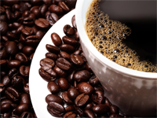

Кофе Лунго
Лунго – один из «Великой кофейной триады» классических рецептов на основе эспрессо. Так итальянцы называют три базовых рецепта своей кофейной кухни: эспрессо, ристретто и лунго. Последний имеет самый большой объем и самую высокую крепость.
Кофе лунго готовят в автоматической кофемашине. Рецепт является ближайшим родственником эспрессо, но лунго имеет больший объем. Это отражено и в названии напитка. «Лунго» в переводе с итальянского означает «длинный, долгий», поэтому рецепт иногда именуют длинным эспрессо.

Кофе засыпать в рожок кофемашины, воду влить в бункер. Время экстракции должно составить не менее 50 секунд для одной порции лунго. Кофе сразу же подают к столу.
Приготовить лунго без кофемашины довольно сложно. Можно получить напиток, очень похожий на настоящий лунго, в гейзерной кофеварке. Для этого потребуется кофе крупного помола, и приготовление на очень медленном огне, чтобы увеличить время экстракции.
Лунго существует и в виде капсул, для приготовления в кофемашинах капсульного типа.
В Италии – на родине лунго – этот напиток редко употребляют после 11 утра, считая его слишком крепким для дневного кофепития. Негласные традиции Италии рекомендуют пить лунго с утра, эспрессо в обед, ристретто во второй половине дня, снижая таким образом потребление кофеина в течении дня.